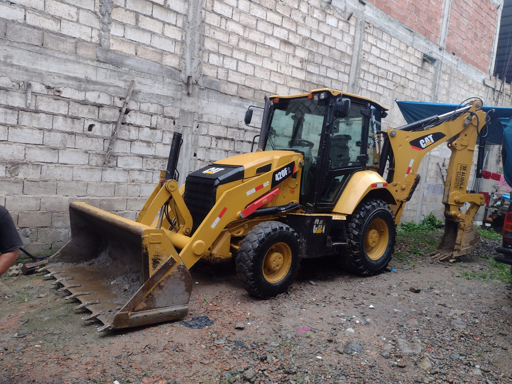

Retroexcavadora 420F2 CAT

Marca: Caterpillar
Modelo: 420F2 BE
Serie de Equipo: LBS00192
Potencia Neta: SAE J1349
Una retroexcavadora permite realizar un trabajo de demolición menor de
forma fácil y luego transportar los materiales restantes a otro lugar.
Asimismo,puedes deslizar las cuchillas para nivelar el terreno y que los
vehículos de transporte puedan movilizarse sin inconvenientes.